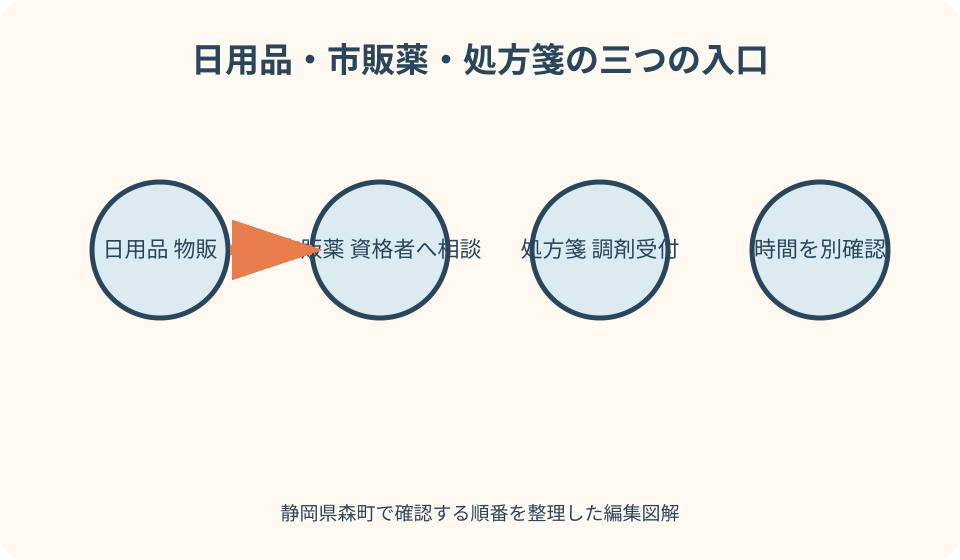
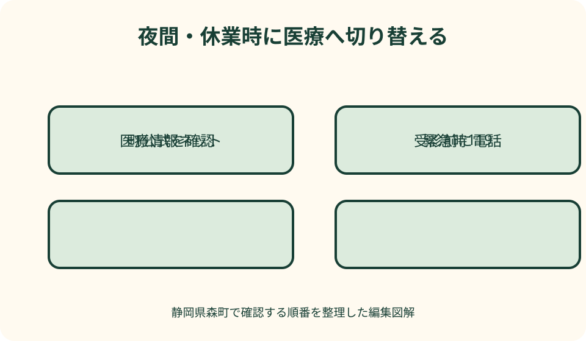

森町生活・医療｜最終確認 2026-08-10
静岡県森町のドラッグストア・薬局｜日用品・市販薬・処方箋を分けて探す
静岡県森町で『薬局を探す』時は、必要なものを三つに分けます。マスクや紙類などの日用品、薬剤師または登録販売者へ相談して買う一般用医薬品、医療機関の処方箋に基づく調剤です。ドラッグストアの売場が開いていても調剤窓口が閉まる時間や曜日があり、店舗に薬が並んでいても誰にでも適するとは限りません。本記事は症状を診断せず、ウエルシアや杏林堂の公式情報、森町の医療・休日案内から、営業時間、受付、在庫、持ち物、交通、夜間の相談先を確認する順番を示します。

編集イラスト日用品・一般用医薬品・処方薬を最初に分ける
日用品は衛生用品、紙類、化粧品、飲料などで、一般用医薬品とは売場と販売条件が異なる場合があります。食品スーパーの買い物とも目的を分けます。
一般用医薬品は、症状や年齢、持病、妊娠・授乳、併用薬を販売資格者へ伝えて相談します。本記事から商品名を選び、自己診断する方法は取りません。
処方薬は、医師等が発行した処方箋に基づき薬局が調剤します。ドラッグストアで似た商品が買えることと、処方内容を代替できることは別です。
本記事は医療行為や服薬指導を行いません。2026年8月10日に確認した森町、病院、店舗の情報から、相談先へつなぐ手順を整理しています。
町内候補は店舗公式と医療情報ネットで確かめる
ウエルシア森町森店は、公式店舗ページに物販と調剤の電話、営業時間を分けて掲載しています。物販が開く時間を処方受付へ流用しません。
杏林堂薬局森町店は杏林堂公式の店舗検索と調剤案内、厚生労働省の医療情報ネットで所在地や薬局機能を確認します。検索結果の日付も見ます。
町内の他の薬局を探す場合も、地図口コミだけで営業や調剤を確定せず、医療情報ネット、薬局公式、電話を照合します。
店舗数や売場面積を順位付けしません。必要な受付が今日開いているか、在庫確認へ応じられるか、交通が成立するかで候補を選びます。
物販営業時間と調剤受付は別の時計で動く
ドラッグストア本体が夜や休日に営業しても、調剤窓口は平日のみ、途中休止、早い終了の場合があります。公式ページの欄を別々に読みます。
処方箋を受け取ったら、発行日、使用期間、薬局の受付、移動時間を確認します。期限の延長や受付後の即時受取を自己判断で期待しません。
受付終了直前は、在庫確認、疑義照会、服薬説明に必要な時間を確保できない場合があります。到着見込みを電話で伝え、指示に従います。
年末年始、祝日、棚卸し、荒天、臨時休業は通常表と異なります。店舗公式のお知らせを読み、当日は電話番号も保存します。
一般用医薬品は販売資格者へ相談できる時間を聞く
一般用医薬品には販売時の情報提供や確認が必要な区分があります。売場が開いていても、希望品をその時間に販売できるとは限りません。
相談では年齢、症状が始まった時期、持病、妊娠・授乳、アレルギー、服用中の薬を伝えます。隠したまま『一番強い薬』を求めません。
子ども用という表示だけで年齢と体重に合うとは判断しません。保護者が薬剤師・登録販売者へ相談し、受診が必要と言われたら医療へ切り替えます。
同じ成分を含む風邪薬、鎮痛薬などを重ねる危険があるため、手元の箱や写真、お薬手帳を見せます。用量の独自変更は行いません。
処方箋は受付・在庫・照会・受取を一組にする
薬局へは、処方箋の医療機関名、発行日、薬の種類や日数、来店予定を伝えます。個人情報を安全な公式連絡手段以外へ送信しません。
処方薬の在庫がない場合、取寄せ、他薬局への案内、処方元への照会が必要になることがあります。薬局の説明を聞かず別の薬で代用しません。
処方箋事前送信サービスがあっても、送信だけで調剤完了や受取確定とは限りません。原本等の必要書類、受付返信、本人確認を確認します。
受取時は薬の名前、量、回数、期間、保管、飲み忘れ、運転や飲食の注意を薬剤師へ確認します。分からないまま会計だけを済ませません。
お薬手帳と持参物で重複や行き違いを減らす
処方箋、マイナンバーカードまたは保険証等、医療証、診察券、お薬手帳を一つの袋へ入れます。必要物は薬局や医療機関へ事前確認します。
紙のお薬手帳とアプリを併用している場合、情報が分散していないか見ます。他院、歯科、市販薬、サプリメントも相談時に伝えます。
旅行中に持薬の名前が分からない事態を避けるため、薬袋、処方内容、かかりつけ先の連絡先を本人と同行者が確認できる形で持ちます。
薬の現物を別容器へまとめると識別できない場合があります。旅行用へ小分けする方法は薬剤師へ相談し、ラベル情報を失わないようにします。

在庫確認は商品名より必要条件を正確に伝える
一般用医薬品や衛生用品は、商品名、規格、数量を伝えます。似た名称、容量違い、子ども用と大人用を電話回答だけで取り違えないよう復唱します。
処方薬の在庫照会では個人情報と処方内容が関わるため、薬局が指定する方法に従います。SNSの公開投稿で在庫を尋ねません。
電話時点で在庫があっても、来店までの確保を保証するとは限りません。取置きの可否、期限、本人確認を聞きます。
品切れなら複数店へ同時に取置きを頼んで放置せず、第一候補の回答を待ちます。不要になった依頼は薬局へ連絡します。
子ども連れは薬探しより受診判断を優先する
乳幼児の発熱、呼吸、意識、けいれん、脱水など不安がある時は、商品棚で様子を見ず、公的な相談先や医療機関へ連絡します。緊急時は119番です。
子どもの年齢、体重、症状、開始時刻、飲食、尿、服用薬を記録します。保護者の感覚だけで大人用を分割して与えません。
旅行先では母子健康手帳、医療証、保険情報、お薬手帳、体温計、常用薬を準備します。地域外での医療費や手続きは加入先へ確認します。
薬局へ連れて行く時も、車内に子どもだけを残しません。長い待ち時間が難しければ、受取方法や同行者の分担を薬局へ相談します。
旅行・キャンプでは持薬を現地調達前提にしない
宿泊日数分に必要な持薬を出発前に確認し、予備の扱いは処方元や薬剤師へ相談します。紛失時に同じ薬をすぐ買えるとは考えません。
薬は高温、直射日光、凍結、湿気を避ける必要があります。車内、テント、コテージの保管条件を確認し、冷所品は医療者へ運搬方法を聞きます。
山間部へ入る前に、日用品、衛生用品、虫よけなどを確認します。ただし虫刺されや体調不良を市販薬だけで解決する計画にはしません。
飲酒、屋外活動、運転と薬の関係は、薬剤師の説明と添付文書を確認します。眠気等の注意がある薬を服用して運転しません。
車で行く時は体調と運転可否を分けて判断する
店舗駐車場の有無を公式で確認しても、空車は保証されません。体調不良者を車内へ残して長時間買い物せず、必要なら受診へ切り替えます。
薬を飲む前後の運転可否は商品や処方で異なります。自己判断せず薬剤師へ尋ね、運転できない場合の同行者、タクシー、宿泊延長を考えます。
夜間に町外店へ急いで運転すると、症状と疲労で危険が増えます。公的相談へ電話し、案内された医療機関や方法へ進みます。
購入品を夏の車内へ放置しません。薬の保管条件を読み、帰宅や宿へ直行できない場合は適切な持運びを薬剤師へ相談します。
鉄道・バスは調剤完了と帰りの便を両方確認する
森町公式の公共交通ページから、天浜線、路線バス、町営バス、タクシーの運行主体へ進み、店舗や病院の最寄りを確認します。
処方受付から受取までの時間は、在庫や照会で変わります。帰りの便へ必ず間に合うと考えず、薬局へ乗車限界を伝えます。
待ち時間に別の場所へ出る場合、戻る時刻と連絡方法を決めます。薬局の待合を荷物置場にしたり、処方箋を放置したりしません。
運休や遅延が出たら、受取日を変えられるか、別薬局へ移せるかを薬局と処方元へ相談します。自分で処方内容を複製しません。
休日当番は毎月の最新表で確認する
森町公式の『病気になったとき』は、磐周地域の救急当番医、医療情報ネット、公立森町病院へ進む入口です。古い当番表を保存して使いません。
当番医は診療科、受付、症状、所在地が希望と合うとは限りません。受診前に指定された連絡先へ電話し、受入れを確認します。
休日に開くドラッグストアがあっても、医師の診察や処方箋調剤を代替しません。急な症状では相談先の指示を優先します。
県内の医療機関・薬局を探す時は厚生労働省の医療情報ネットを使い、表示された診療・受付時間を当日電話で再確認します。
夜間は店探しではなく公的相談へ切り替える
夜間に症状が悪化したら、開いている店へ順番に走る前に、公立森町病院の救急受診案内と森町の相談先を確認します。
公立森町病院は救急受診前の電話や時間帯の案内を公式ページに示しています。直接行けば必ず診てもらえるとは考えず、最新条件に従います。
救急当番医情報の提供や看護師相談など、公的窓口は対象時間と地域があります。電話番号と利用条件を町公式で確かめます。
意識障害、呼吸困難など緊急性が高い場合は、薬局の営業確認をせず119番へ連絡します。迷う症状について本記事は診断しません。
休業・在庫なし・処方不可時は順序を守って切り替える
日用品がなければ、営業確認済みの別店、町外店、翌日購入へ変えます。医薬品と違い、安全上急がない物は夜間移動を避けます。
一般用医薬品を販売できない時間なら、資格者がいる時間を聞き、症状が待てない場合は公的相談へ連絡します。自己判断で別用途の商品を選びません。
処方薬の在庫がなければ、薬局へ取寄せや対応可能な薬局を相談します。処方元の確認が必要な時は、連絡結果を待ちます。
休日・夜間に通常調剤が難しければ、当番医や医療機関の指示へ従います。複数の救急窓口へ同時に依頼して受診枠を放置しません。

健康相談と診療・服薬指導の境界を守る
森町の健康相談窓口は健康情報へつながる入口ですが、個別の診断や処方を行う窓口とは限りません。相談内容と受付条件を町へ確認します。
薬剤師は薬の専門家として相談できますが、診断が必要な症状では医療機関を勧める場合があります。その案内を販売拒否と受け取りません。
インターネットの体験談、口コミ、生成された回答を、用量、併用、子どもの投薬判断へ使いません。公的情報と資格者へ戻ります。
家族が以前使った処方薬を別の人へ渡さず、残薬を自己判断で再開しません。処分方法は薬局や自治体へ確認します。
受取後は保管条件と移動時間をその場で確認する
処方薬や一般用医薬品を受け取ったら、車内、宿、キャンプ場へ移動する時間と、温度・遮光等の保管条件を薬剤師または販売担当者へ確認します。外箱の印象で保冷の要否を決めません。
冷所保管等の指示がある品は、家庭用保冷バッグでよいか、凍結を避ける必要があるか、受取後いつまでに保管場所へ移すかを具体的に聞きます。自己流で氷へ直接触れさせません。
車内へ薬を置いたまま観光や買い物を続けず、先に宿や自宅へ戻る選択をします。暑い日だけでなく、冬の低温や直射日光についても品ごとの説明を優先します。
説明書、薬袋、領収書、問い合わせ先を薬と一緒に保管し、家族が別に持ち帰る場合は受取者と保管場所を共有します。中身だけを小袋へ移して名称を分からなくしません。
災害・停電時は営業検索より持薬情報を守る
大雨、土砂、停電、道路規制があるときは、営業している薬局へ向かうことより森町の防災情報と避難行動を優先します。開店表示が移動経路の安全を保証するものではありません。
お薬手帳の紙面、薬袋、医療機関と薬局の連絡先は、スマートフォンが使えない場合にも確認できる形で持ちます。薬の外観や色だけを伝える準備では不十分です。
停電で保管設備へ影響が出た薬は、見た目に変化がなくても使用可否を自己判断せず、薬剤師や処方元へ相談します。廃棄や飲み直しも独自に決めません。
避難先や外出先で不足が判明した場合は、避難所運営者、公的医療相談、医療機関へ持薬情報を示し、受診・処方・調剤の適切な入口を案内してもらいます。
良い点——物販と調剤の公式情報を分けて確認できる
良い点は、町内店舗の公式ページで物販と調剤を別欄として確認できることです。電話も分かれていれば、用件に合う窓口へ進めます。
森町公式には医療機関、休日・夜間、公立森町病院、医療情報ネットへの入口があります。店が閉まる時に医療へ切り替えやすくなります。
お薬手帳を使えば、町外の医療機関や薬局を利用する旅行中も服薬情報を伝えやすくなります。ただし記録漏れがないか本人が確認します。
鉄道、バス、タクシーの公式入口があるため、運転できない状況を想定できます。時刻と配車は訪問日の運行主体へ確認します。
注文したい点——営業中表示から調剤可否を誤認しやすい
注文したい点は、地図の『営業中』表示が物販売場を示し、調剤窓口や一般用医薬品の販売資格者の在席を表さない場合があることです。
店舗検索で、物販、医薬品相談、処方受付、休日、休憩時間を色分けし、更新日時を示すと、急ぐ人の行き違いを減らせます。
町の医療案内も、症状の緊急度別に、平日日中、休日、夜間、深夜の確認先が一画面にまとまると利用しやすくなります。
公共交通案内には、病院や薬局最寄りから帰る便への導線が必要です。本記事では時刻を固定せず、当日確認の順序で補います。
代案・結論——必要物と相談先を先に特定する
日用品、一般用医薬品、処方薬のどれかを確定し、店舗公式で対応窓口、営業、受付を見ます。目的が曖昧なまま複数店を回りません。
一般用医薬品は資格者へ相談し、処方薬は処方箋、お薬手帳、本人確認書類を用意します。在庫と受取は薬局の回答で確定します。
休業や在庫不足では、別店、取寄せ、処方元への照会を相談し、症状が待てない場合は休日当番や公的相談へ切り替えます。
結論は、薬局探しを商品探しだけにしないことです。医療が必要な状態を売場で長く待たせず、夜間・緊急時は適切な相談先へ進みます。
大石の視点——移住下見では薬局までの往復を測る
私（大石）は、移住下見で薬局の店舗数だけでなく、体調が悪い日に家から電話し、移動し、薬を受け取り、戻れるかを確認します。
車が使えない日、休日、家族の薬が取寄せになった日を想定し、交通、公的相談、周辺市の医療を一枚に記録します。
かかりつけ薬局を選ぶ時は近さだけでなく、服薬情報を継続して相談できるかを本人が確かめます。本記事が特定薬局を推薦するものではありません。
この記事の情報確認日は2026年8月10日です。店舗、調剤、休日当番、病院、交通は変更されるため、利用直前に公式情報を確認してください。
公式情報・確認先
掲載内容は次の一次情報を基礎に整理しました。営業、料金、催し、交通は変わるため、出発前または手続き前にリンク先で最新情報を確認してください。